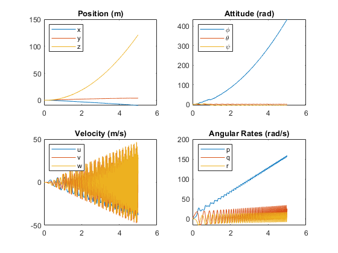
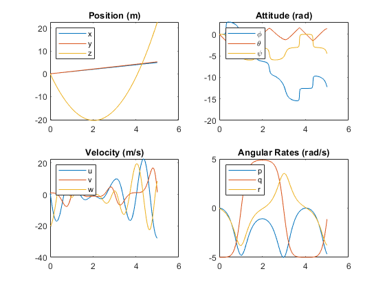

Programming Homework 1 - (Your name here)
Contents
Task 5
% (modify this code for Task 5) u = [2.3]; [tout, xout] = ode45(@(t,x) monospinnerDynamics(t, x, u), [0 5], zeros(12, 1)); figure(1); hold on plotStateHistory(tout, xout); hold off
(answer to Task 5 question here) The angular rate in the y-direction is initially moving the fastest because of the moment generated by the thrust which is constant and much larger at the start.
Task 6
% (code for task 6 here) u = [0]; [tout, xout] = ode45(@(t,x) monospinnerDynamics(t, x, u), [0 5], [0; 0; 0; 0; 0; 0; 1; 1; -20; 0; -5; 0]); figure(2); hold on plotStateHistory(tout, xout); hold off
(answer to Task 6 question here) As the velocity is body coordinates and there is an angular velocity in the y-direction applied initially, the monospinner is spinning, thus w in body coordinates keeps oscillating but effecitvely is going down. Also, the p,q,r change direction because angular velocity is proportional to the moment of inertia and omega and multiplying the two induces rotation in all directions which eventually switch.
Task 7
Aerodynamic forces to account for drag. (answer to Task 7 question here)